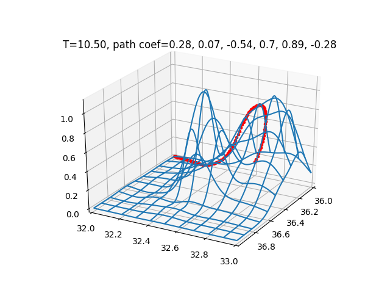
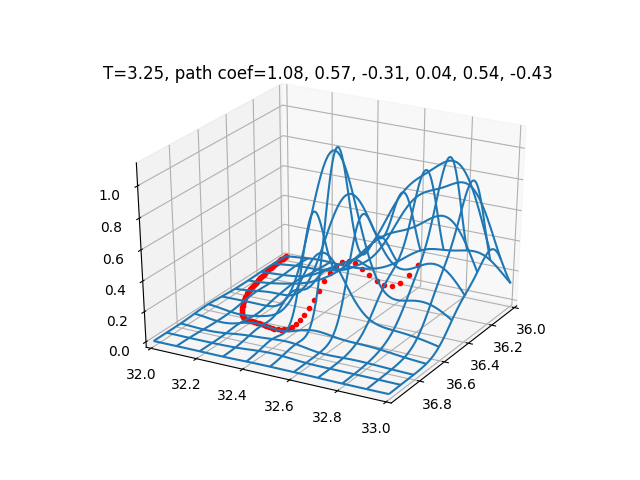
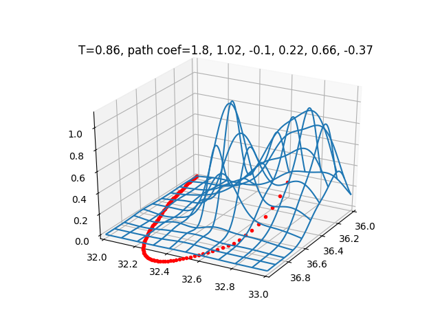
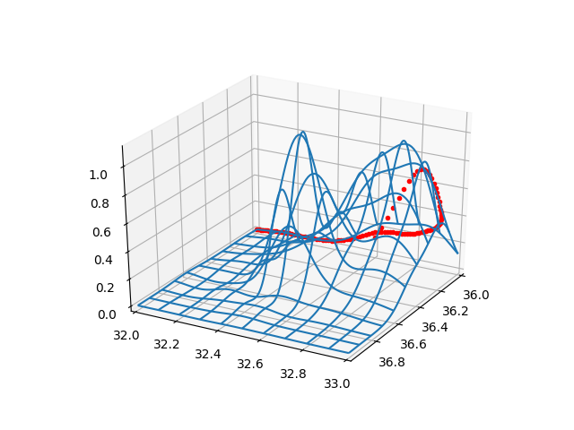
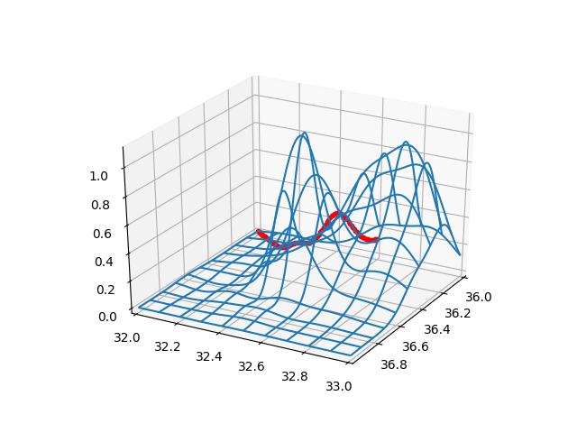
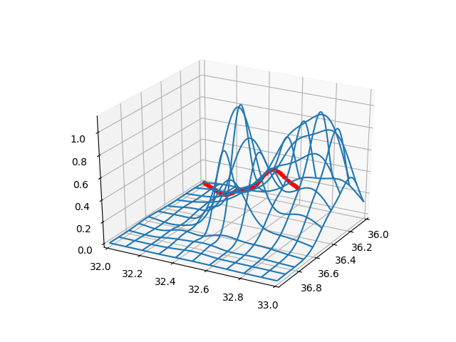

Elimizde bir alan içindeki yükseklikleri veren bir fonksiyon $f(x,y)$ olduğunu düşünelim. Acaba verili bir başlangıç ve bitiş noktası arasındaki en "rahat" gidiş yolunu nasıl buluruz?
Bu problem bir çizgi entegral hesabına çevirilebilir. Bir skalar alan üzerinden giden herhangi bir parametrize eğrinin altındaki alanı hesaplamayı biliyoruz [2]. Ayrıca istediğimiz derecede polinom parametrize eğrileri nasıl yaratacağımızı biliyoruz [3]. Bu fikirleri bir araya koyarsak, geriye kalan bir optimizasyon problemidir. Çünkü en rahat yol, "toplam yüksekliği en az olan yol" olarak görülebilir, ve burada çizgi entegrali faydalı olur.
Önce yükseklikleri ve eğrileri iki örnek üzerinde görelim. Bir rasgele tepe, ve bir rasgele yol çiziyoruz,
from mpl_toolkits.mplot3d import Axes3D
from scipy.spatial.distance import cdist
from matplotlib import cm
def gfunc(x, y):
s1 = 2.2; x1 = 2.0; y1 = 2.0
g1 = np.exp( -4 *np.log(2) * ((x-x1)**2+(y-y1)**2) / s1**2)
return g1
def plot_surf_path(a0,a1,a2,a3,a4,b0,b1,b2,b3,b4):
D = 50
x = np.linspace(0,5,D)
y = np.linspace(0,5,D)
xx,yy = np.meshgrid(x,y)
zz = gfunc(xx,yy)
fig = plt.figure()
ax = fig.gca(projection='3d')
ax.set_xlim(0,5)
ax.set_ylim(0,5)
surf = ax.plot_wireframe(xx, yy, zz,rstride=10, cstride=10)
t = np.linspace(0,1.0,100)
x = a0 + a1*t + a2*t**2 + a3*t**3 + a4*t**4
y = b0 + b1*t + b2*t**2 + b3*t**3 + b4*t**4
ax.plot3D(x, y, gfunc(x,y),'r.')
# 1. gidis yolunun tanimi, uzun yoldan dolanarak gidiyor
a1,a2,a3 = 1.5, 8.1, 4.0
b1,b2,b3 = 0.3, 0.4, 23.3
a0,b0=(1.0,1.0)
ex,ey=(0.3,4.0)
a4 = ex - a0 - (a1+a2+a3)
b4 = ey - b0 - (b1+b2+b3)
test_coefs1 = (a0,a1,a2,a3,a4,b0,b1,b2,b3,b4)
plot_surf_path(a0,a1,a2,a3,a4,b0,b1,b2,b3,b4)
plt.savefig('calc_multi_40_elev_01.png')
Eğer üstteki gidiş yoluna kuşbakışı, iki boyutlu ortamda bakmak istersek,
t = np.linspace(0,1.0,100)
x = a0 + a1*t + a2*t**2 + a3*t**3 + a4*t**4
y = b0 + b1*t + b2*t**2 + b3*t**3 + b4*t**4
plt.xlim(0,5.0)
plt.ylim(0,5.0)
plt.plot(x,y)
plt.savefig('calc_multi_40_elev_02.png')

Şimdi ikinci bir gidiş yoluna bakalım, başlangıç noktası aynı ama bitiş farklı,
# 2. gidis yolunun tanimi, dik cikip iniyor
a1,a2,a3 = 1.5, 3.0, 1.0
b1,b2,b3 = 0.0, 1.0, 1.0
a0,b0=(1.0,1.0)
ex,ey=(0.3,4.0)
a4 = ex - a0 - (a1+a2+a3)
b4 = ey - b0 - (b1+b2+b3)
test_coefs2 = (a0,a1,a2,a3,a4,b0,b1,b2,b3,b4)
plot_surf_path(a0,a1,a2,a3,a4,b0,b1,b2,b3,b4)
plt.savefig('calc_multi_40_elev_03.png')

Bu yolları tabii ki rasgele parametreler üzerinden yarattık, bunlar optimal yollar değiller.
Optimallik için gereken çizgi entegralinin hesabına gelelim. Bu hesap için formül,
$$ \int_{t=0}^{t=1} f(x(t),y(t)) \sqrt{(\mathrm{d} x/\mathrm{d} t)^2 + (\mathrm{d} y/\mathrm{d} t)^2} \mathrm{d} t $$
Formülde görülen $\mathrm{d} x/\mathrm{d} t$ ve $\mathrm{d} y/\mathrm{d} t$, parametrik eğri formülünü tekrar yazalım,
$$ x(t) = a_0 + a_1 t + a_2 t^2 + a_3 t^3 $$
$$ y(t) = b_0 + b_1 t + b_2 t^2 + b_3 t^3 $$
ve türev, bunların karesi, toplamların karekoku, vs. hesaplarını sembolik olarak altta yapalım,
import sympy
vars = 't a0 a1 a2 a3 b0 b1 b2 b3 gamma x y'
t, a0, a1, a2, a3, b0, b1, b2, b3, gamma, x, y = sympy.symbols(vars)
xdef = a0 + a1*t + a2*t**2 + a3*t**3 + a4*t**4
ydef = b0 + b1*t + b2*t**2 + b3*t**3 + b4*t**4
dxdt = sympy.diff(xdef,t)
print (dxdt)
dydt = sympy.diff(ydef,t)
print (dydt)
sqrtdef = sympy.sqrt(sympy.diff(xdef,t)**2 + sympy.diff(ydef,t))
print (sqrtdef)
a1 + 2*a2*t + 3*a3*t**2 - 57.2*t**3
b1 + 2*b2*t + 3*b3*t**2 - 84.0*t**3
sqrt(b1 + 2*b2*t + 3*b3*t**2 - 84.0*t**3 + (a1 + 2*a2*t + 3*a3*t**2 - 57.2*t**3)**2)
Şimdi entegralin kendisine gelelim. Bu noktada üstteki sembolik programı daha da ilerletip sembolik entegrali almayı deneyebilirdik. Fakat bu işlem oldukca uzun zaman alıyor. Zaten daha ileride daha çetrefil yükseklik fonksiyonları ile çalışmak istersek, o durumda da kullanabilecek bir metota ihtiyacımız var. Burada sayısal entegral almak [1] bir seçenektir. Ama o zaman optimizasyon için gereken gradyan hesabı nasıl olacak diye merak edenler olabilir.. Bazi optimizasyon rutinleri gradyan olmadan da isleyebiliyor.
Altta entegral hesabını üstteki örnek yollar için görelim,
def trapz(y, dx):
vals = np.nan_to_num(y[1:-1],0)
tmp = np.sum(vals*2.0)
return (y[0]+tmp+y[-1])*(dx/2.0)
def intval(t,a0,a1,a2,a3,a4,b0,b1,b2,b3,b4):
sq = np.sqrt(b1 + 2*b2*t + 3*b3*t**2 - 112.0*t**3 + (a1 + 2*a2*t + 3*a3*t**2 - 65.2*t**3)**2)
x = a0 + a1*t + a2*t**2 + a3*t**3 + a4*t**4
y = b0 + b1*t + b2*t**2 + b3*t**3 + b4*t**4
x = np.array(x)
y = np.array(y)
z = gfunc(x,y)
res = z * sq
T = trapz(res, 1.0/len(t))
return T
t = np.linspace(0,1,100)
a0,a1,a2,a3,a4,b0,b1,b2,b3,b4 = test_coefs1
T = intval(t,a0,a1,a2,a3,a4,b0,b1,b2,b3,b4)
print (T)
a0,a1,a2,a3,a4,b0,b1,b2,b3,b4 = test_coefs2
T = intval(t,a0,a1,a2,a3,a4,b0,b1,b2,b3,b4)
print (T)
1.624956808796678
5.534245013919315
Daha dik yolun entegrali daha yüksek çıktı, bu normal.
Şimdi optimal yolu bulalım,
import pandas as pd
import numpy as np
from scipy import optimize
import matplotlib.pyplot as plt
from mpl_toolkits.mplot3d import Axes3D
from scipy.spatial.distance import cdist
from matplotlib import cm
def trapz(y, dx):
vals = y[1:-1]
vals = vals[vals>0.0]
return (y[0]+np.sum(vals*2.0)+y[-1])*(dx/2.0)
def gfunc(x, y, offset=0.0):
s1 = 2.2; x1 = 2.0; y1 = 2.0
g1 = np.exp( -4 *np.log(2) * ((x-x1)**2+(y-y1)**2) / s1**2)
return g1+offset
def plot_surf_path(azim,elev,a0,a1,a2,a3,a4,b0,b1,b2,b3,b4):
D = 50
x = np.linspace(0,5,D)
y = np.linspace(0,5,D)
xx,yy = np.meshgrid(x,y)
zz = gfunc(xx,yy)
fig = plt.figure()
ax = fig.gca(projection='3d')
ax.set_xlim(0,5)
ax.set_ylim(0,5)
ax.view_init(elev=elev, azim=azim)
surf = ax.plot_wireframe(xx, yy, zz,rstride=10, cstride=10)
t = np.linspace(0,1.0,100)
x = a0 + a1*t + a2*t**2 + a3*t**3 + a4*t**4
y = b0 + b1*t + b2*t**2 + b3*t**3 + b4*t**4
ax.plot3D(x, y, gfunc(x,y),'r.')
def find_path(ex,ey,a0,b0,offset):
cons=({'type': 'ineq','fun': lambda x: 4.0-x[0]}, # y<30
{'type': 'ineq','fun': lambda x: 4.0-x[1]},
{'type': 'ineq','fun': lambda x: 4.0-x[2]},
{'type': 'ineq','fun': lambda x: 4.0-x[3]},
{'type': 'ineq','fun': lambda x: 4.0-x[4]},
{'type': 'ineq','fun': lambda x: 4.0-x[5]},
{'type': 'ineq','fun': lambda x: x[0]}, # y>0
{'type': 'ineq','fun': lambda x: x[1]},
{'type': 'ineq','fun': lambda x: x[2]},
{'type': 'ineq','fun': lambda x: x[3]},
{'type': 'ineq','fun': lambda x: x[4]},
{'type': 'ineq','fun': lambda x: x[5]},
)
# rasgele secilmis baslangic degerleri
a1,a2,a3 = 0,0,0
b1,b2,b3 = 0,0,0
x0 = a1,a2,a3,b1,b2,b3
def pintval(p):
a1,a2,a3,b1,b2,b3 = p
t = np.linspace(0,1.0,100)
a4 = ex - a0 - (a1+a2+a3)
b4 = ey - b0 - (b1+b2+b3)
sq = np.sqrt(b1 + 2*b2*t + 3*b3*t**2 - 112.0*t**3 + (a1 + 2*a2*t + 3*a3*t**2 - 65.2*t**3)**2)
x = a0 + a1*t + a2*t**2 + a3*t**3 + a4*t**4
y = b0 + b1*t + b2*t**2 + b3*t**3 + b4*t**4
x = np.array(x)
y = np.array(y)
z = gfunc(x,y)
res = z * sq
T = trapz(res, 1.0/len(t))
return T
sol = optimize.minimize(pintval,
x0,
method = 'COBYLA',
callback=print,
tol=0.001,
constraints=cons)
print (sol.x)
return sol.x
a0,b0=1.0,1.0
ex,ey=0.3,4.0
res = find_path(ex,ey,a0,b0,offset=0.5)
a1,a2,a3,b1,b2,b3 = res
a4 = ex - a0 - (a1+a2+a3)
b4 = ey - b0 - (b1+b2+b3)
print (a0,a1,a2,a3,a4,b0,b1,b2,b3,b4)
plot_surf_path(-124,58,a0,a1,a2,a3,a4,b0,b1,b2,b3,b4)
#plt.savefig('calc_multi_40_elev_04.png')
plt.show()
ex,ey=4.0,4.0
res = find_path(ex,ey,a0,b0,offset=0.5)
a1,a2,a3,b1,b2,b3 = res
a4 = ex - a0 - (a1+a2+a3)
b4 = ey - b0 - (b1+b2+b3)
print (a0,a1,a2,a3,a4,b0,b1,b2,b3,b4)
plot_surf_path(-124,58,a0,a1,a2,a3,a4,b0,b1,b2,b3,b4)
#plt.savefig('calc_multi_40_elev_05.png')
plt.show()


Ayrıca bir offset parametresiyle yükseklik fonksiyonunun döndürdüğü
her yükseklik hesabına bir offset kadar yüksekliği suni olarak
eklediğimize dikkat. Bunun sebebi yer seviyesinin 0 yükseklikte olması
sebebiyle sürekli tercih edilebilmesi, yani upuzun bir yol yer seviyesinden
gidebilir, çünkü orada gitmenin hiçbir bedeli yoktur. Biz de her yüksekliği
suni bir yükseklik ekleyerek yerdeki çok uzun yolların tercih edilmemesini
sağladık.
Iki Tepe, RBF
İşleri biraz daha zorlaştıralım. Gerçek dünya şartlarında bir bölgenin
yükseklik verisinden örneklem toplayıp, bu verileri RBF ile modelleyip [4],
o modeli yükseklik için kullanmak isteyebiliriz. Eğer herhangi bir $x,y$
noktasının yüksekliğinin verecek RBF toplam fonksiyonunu temiz bir şekilde
işletmenin yolunu bulabilirsek, bunun üzerinden çizgi entegrali, ve bu
entegral fonksiyonun autoğgrad türevi üzerinden minimizasyonunu
yapabiliriz.
Hatta daha da zorlaştıralım, gerçek dünya şartlarında coğrafik kordinatları da parçalara bölüp her parça üzerinde RBF modellemesi yapmak gerekebilir. Diyelim ki kordinatları tam sayı bazında bölüyoruz, mesela tüm enlem/boylam (36,32) kordinatları bir blok (Alanya çevresi), (36,33) bir başka blok. Her tam sayılı alan yaklaşık 9,300 $km^2$'ye tekabül eder. Bu yeterince büyük bir alan, oradaki tepeleri modellemek ise yarar. Her neyse, diyelim ki bir hesap için (36,32), ve (36,33) RBF'lerini bir sözlük içine alıyoruz, ve bu iki RBF bloğu üzerinden optimizasyonun olmasını sağlayalım.
Test amaçlı bir blok içinde iki tepe yaratalım, sonra aynı tepeleri bir başka blok içinde yaratacağız, ve ikisini yanyana koyacağız.
Şimdi çizgi entegrali hesabı ve optimizasyon için gerekli rutinleri
yazalım, ve bir başlangıç noktası (36.0,32.0)'dan
(36.4,34.0)'a giden optimal yolu bulmaya çalışalım.
Autograd, Otomatik Türev
Şimdiye kadar gördüğümüz yöntem gradyan /türev bilgisinin sayısal olarak hesaplayan bir yöntem kullandı, ÇOBYLA. Fakat gradyan bilgisini otomatik türev olarak aldırıp (sembolik türev ile aynı kuvvette), minimizasyon adımını kendimiz de atabilirdik. Ayrıca sınır şartlarını [5]'te gördüğümüz gibi log-bariyer yöntemi ile kendimiz sisteme dahil edebilirdik.
İki tepeli örnek üzerinde görelim. Tepeleri yaratıp, örneklem alıp, RBF modelleme yapıyoruz, o modelle çizgi entegrali hesaplıyoruz, ve belli başlangıç bitiş noktalarına tekabül eden katsayılar üzerinden bu entegrali minimize etmek istiyoruz.
Fakat bir fark var, RBF ile yükseklik hesaplayan metotun türevini otomatik olarak alacağız. Bu sebeple entegral, ve onun içinde çağırdığı tüm metotlar "autograd-perver" olmalı. Ayrıca Autograd, perde arkasında Python kodu üzerinde bazı temelden değişimler yapar, ve bu sebeple metotların autograd üzerinden, ve autograd dışından çağrılmalarında farklılıklar olabiliyor, ayrıca her türlü Python çağrısını autograd-perver kodlar içinden yapamayabiliriz.
Neyse, kodlamayı yapalım. Kodlamadaki değişimi açık olsun,
import numpy as anp ile dahil edilen numpy versiyoununu
farklı isimlendirdik.
Gradyan inişi için gereken gradyan her parametre için
autograd.grad(intval,...) ile alınır [5], ve 0,1,2,.. diye giden
parametreler sırasıyla egrinin katsayıları $a_1,a_2,..$'ye tekabül ediyor.
import numpy as np, numpy.linalg as lin
from mpl_toolkits.mplot3d import Axes3D
import matplotlib.pyplot as plt
from matplotlib import cm
OFFSET = 0.0
np.random.seed(0)
def func(x, y):
s1 = 0.2; x1 = 36.5; y1 = 32.5
s2 = 0.4; x2 = 36.1; y2 = 32.8
g1 = np.exp( -4 *np.log(2) * ((x-x1)**2+(y-y1)**2) / s1**2)
g2 = np.exp( -2 *np.log(2) * ((x-x2)**2+(y-y2)**2) / s2**2)
return g1 + g2
D = 100
x = np.linspace(36,37,D)
y = np.linspace(32,33,D)
xx,yy = np.meshgrid(x,y)
zz = func(xx,yy)
from scipy.interpolate import Rbf
S = 50
np.random.seed(0)
idx = np.random.choice(range(D*D),S)
xr = xx.reshape(D*D)[idx].reshape(S,1)
yr = yy.reshape(D*D)[idx].reshape(S,1)
zr = zz.reshape(D*D)[idx].reshape(S,1)
rbfi = Rbf(xr,yr,zr,function='gaussian',epsilon=0.15)
from autograd import numpy as anp
import autograd
def dist_matrix(X, Y):
sx = anp.sum(anp.power(X,2), 1)
sy = anp.sum(anp.power(Y,2), 1)
D2 = sx[:, anp.newaxis] - 2.0*anp.dot(X,Y.T) + sy[anp.newaxis, :]
D = anp.sqrt(D2)
return D
def gaussian(r,eps): return anp.exp(-anp.power((r/eps),2))
def f_interp(newp):
nodes = rbfi.nodes.reshape(1,len(rbfi.nodes))
newp_dist = dist_matrix(newp, rbfi.xi.T)
elev = anp.dot(gaussian(newp_dist, rbfi.epsilon), nodes.T)
return elev
nodes = rbfi.nodes.reshape(1,len(rbfi.nodes))
def trapz(y, dx):
vals = anp.array([_ if anp.isnan(_)==False else OFFSET for _ in y[1:-1]])
tmp = anp.sum(vals*2.0)
return (y[0]+tmp+y[-1])*(dx/2.0)
DIV = 2.0
alpha = 0.05
LIM = 2.0
mu = 2.0
a1,a2,a3 = np.random.randn()/DIV,np.random.randn()/DIV,np.random.randn()/DIV
b1,b2,b3 = np.random.randn()/DIV,np.random.randn()/DIV,np.random.randn()/DIV
newx = anp.array([a1,a2,a3,b1,b2,b3])
for i in range(6):
t = np.linspace(0,1,100)
a0,b0=(36.0,32.0)
ex,ey=(36.4,32.8)
def obj(xarg):
a1,a2,a3,b1,b2,b3=xarg[0],xarg[1],xarg[2],xarg[3],xarg[4],xarg[5]
a4 = ex - a0 - (a1+a2+a3)
b4 = ey - b0 - (b1+b2+b3)
sq = anp.sqrt(b1 + 2*b2*t + 3*b3*t**2 - 112.0*t**3 + (a1 + 2*a2*t + 3*a3*t**2 - 65.2*t**3)**2)
x = a0 + a1*t + a2*t**2 + a3*t**3 + a4*t**4
y = b0 + b1*t + b2*t**2 + b3*t**3 + b4*t**4
z = [f_interp(anp.array([[xx,yy]]))[0][0] for xx,yy in zip(x,y)]
res = z * sq
T = trapz(res, 1.0/len(t))
cons = mu * (anp.log(LIM+a1) + anp.log(LIM-a1) + \
anp.log(LIM+a2) + anp.log(LIM-a2) + \
anp.log(LIM+a3) + anp.log(LIM-a3) + \
anp.log(LIM+b1) + anp.log(LIM-b1) + \
anp.log(LIM+b2) + anp.log(LIM-b2) + \
anp.log(LIM+b3) + anp.log(LIM-b3))
#print ('as bs',xarg)
#print ('cons',cons)
T = T - cons
#print ('T',T)
if ('ArrayBox' not in str(type(T))):
return float(T)
return T._value
a1,a2,a3,b1,b2,b3=newx[0],newx[1],newx[2],newx[3],newx[4],newx[5]
a4 = ex - a0 - (a1+a2+a3)
b4 = ey - b0 - (b1+b2+b3)
fig = plt.figure()
ax = fig.gca(projection='3d')
ax.view_init(elev=29, azim=29)
ax.set_xlim(36,37)
ax.set_ylim(32,33)
test_3 = anp.column_stack((xx.ravel(), yy.ravel()))
znewnew = f_interp(test_3).reshape(xx.shape)
surf = ax.plot_wireframe(xx, yy, znewnew, rstride=10, cstride=10)
j = autograd.jacobian(obj)
J = j(newx)
d = J
oldx = newx[:]
newx = newx + alpha*d
print ('newx',newx)
print ('diff',np.sum(np.abs(newx-oldx)))
t = np.linspace(0,1,100)
x = a0 + a1*t + a2*t**2 + a3*t**3 + a4*t**4
y = b0 + b1*t + b2*t**2 + b3*t**3 + b4*t**4
z = [f_interp(anp.array([[xx,yy]]))[0][0] for xx,yy in zip(x,y)]
ax.plot3D(x, y, z,'r.')
plt.savefig('linear_app88rbf_08-%d.png' % i)
 
 
 
Üstte her gradyan adımı sonrası hesaplanan yolları görüyoruz. Rasgele katsayılarla başladık (ilk grafik), ve tek bir gradyan inişi adımı ile optimal bir yola oldukca yaklaştık. Bir adım daha daha da iyi sonuç verdi.
İşte görüldüğü gibi son derece çetrefil bir fonksiyon olsa da türevi rahat bir şekilde hesaplamış oluyoruz.
Kaynaklar
[1] Bayramlı, Sayısal Bilim, Sayısal Entegrasyon (Numerical Integration)
[2] Bayramlı, Cok Boyutlu Calculus, Ders 19, Skalar Alanlar Uzerinden Cizgi Entegral
[3] Bayramlı, Cok Boyutlu Calculus, Ders 5, İki Nokta Arasında Parametrize Edilmiş Eğri
[4] Bayramlı, İstatistik ve Veri Analizi, Dairesel Baz Fonksiyonları (Radial Basis Functions -RBF-)
[5] Bayramlı, Fonksiyonel Analiz ve Optimizasyon, Autograd ile Optimizasyon